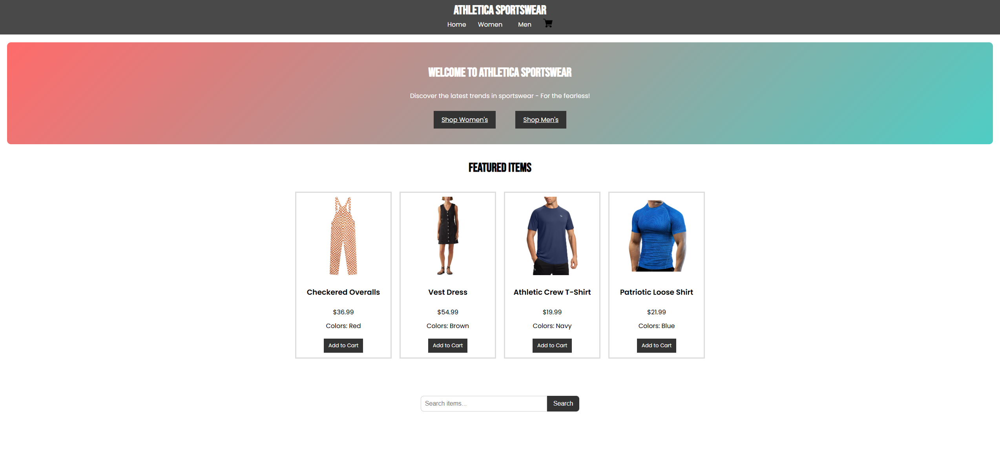
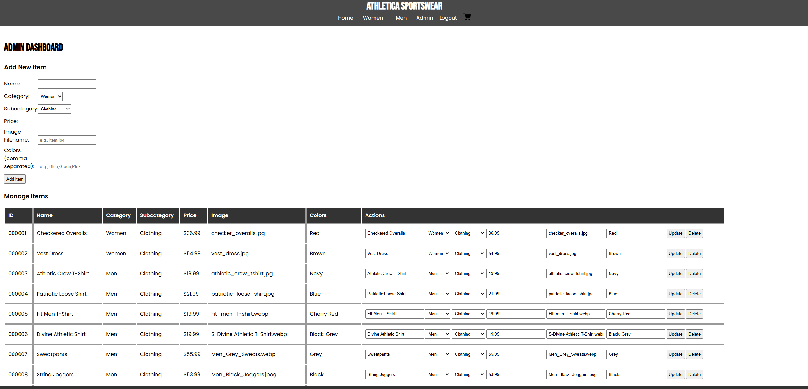
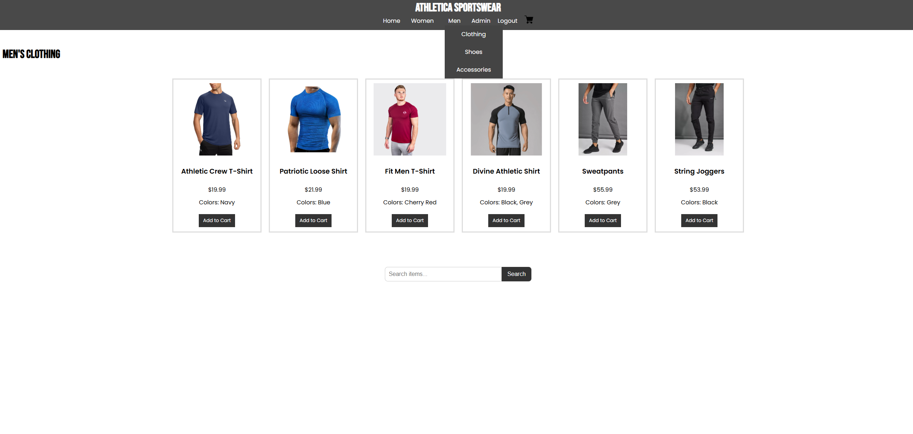

Project 1: Fashion Website
This web application is built using Flask and SQLite, simulating a fully functional e-commerce platform with features such as item browsing, search, shopping cart management, and an admin dashboard for CRUD operations on products.


